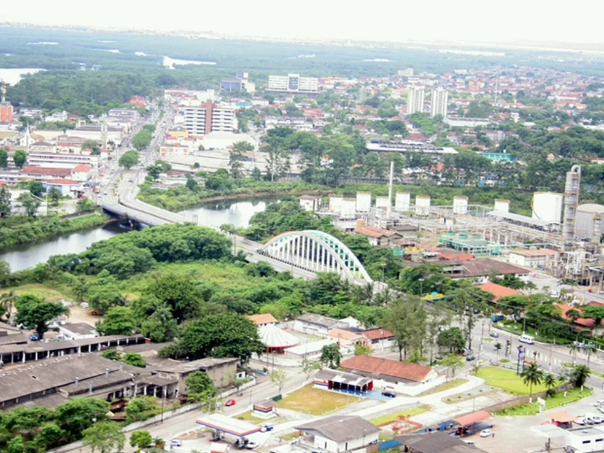

Conheça mais sobre

Bertioga, localizada no litoral norte de São Paulo, é um destino que encanta turistas com suas belas praias e rica biodiversidade. Com mais de 33 km de praias

Principais Aspectos de Bertioga:
Bertioga é um dos quinze municípios paulistas considerados estâncias balneárias pelo Estado de São Paulo, por cumprirem determinados pré-requisitos definidos por Lei Estadual. Tal status garante a esses municípios uma verba maior por parte do Estado para a promoção do turismo regional.

Principais Aspectos de Bertioga: Bertioga é um dos quinze municípios paulistas considerados estâncias balneárias pelo Estado de São Paulo, por cumprirem determinados pré-requisitos definidos por Lei Estadual. Tal status garante a esses municípios uma verba maior por parte do Estado para a promoção do turismo regional.
Clique aqui para voltar para a página principal:

SITES FEITOS POR HEITOR SANTIAGO, LUIZ EDUARDO, PEDRO HENRIQUE ROCHAS
menção honrosa: Pedro Buriti